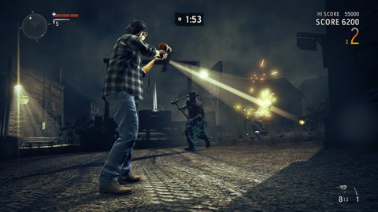
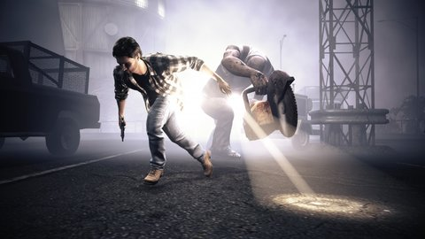
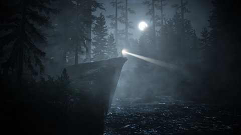

Remedy ha hecho públicos los requisitos del sistema de Alan Wake para PC, confirmando que el juego hará uso de la tecnología 3D estereoscópica gracias a las tarjetas Nvision 3D, aunque destacan que será necesario contar con un equipo de última generación para disfrutar con fluidez de esta característica.
El equipo de desarrollo también ha indicado que todo aquel que quiera activar la configuración gráfica al máximo necesitará un procesador Quad Core y “la última de las tarjetas gráficas” aparecida en el mercado.
– Tiene todo lo que se le puede pedir a una obra de terror, un título digno de los mejores autores de terror en cualquier medio.
– Alan Wake es sobre todo un thriller de acción psicológica, que se aprovecha de las bases del survival horror para narrar su historia con bastante acierto y empleando diversos recursos narrativos bien elegidos.
– También se notan algunos trazos de inspiración en series como Twin Peaks, y algunas más recientes como Perdidos..
– Las abundantes incógnitas y los excelentes ganchos al final de cada episodio consiguen todavía más mantener al jugador pegado al mando.
– Los continuos retrasos y los cambios de enfoque al título hacían temer a muchos que el desarrollo no estuviese yendo por buen camino y que Alan Wake acabase cayendo en el ostracismo, víctima de su propia oscuridad.
  
Titulo: Alan Wake
Año: 2012
Genero: Accíon
Tamaño: Pesa un chingo :v
Editor: Remedy Entertaiment
Descarga aquí
Contraseña: kev.perron